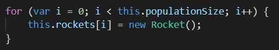
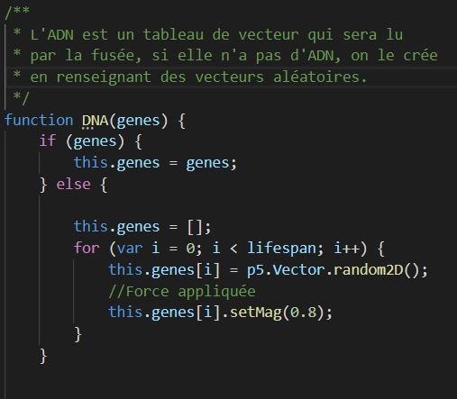
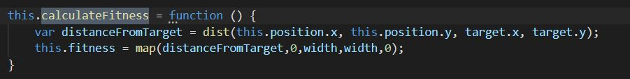
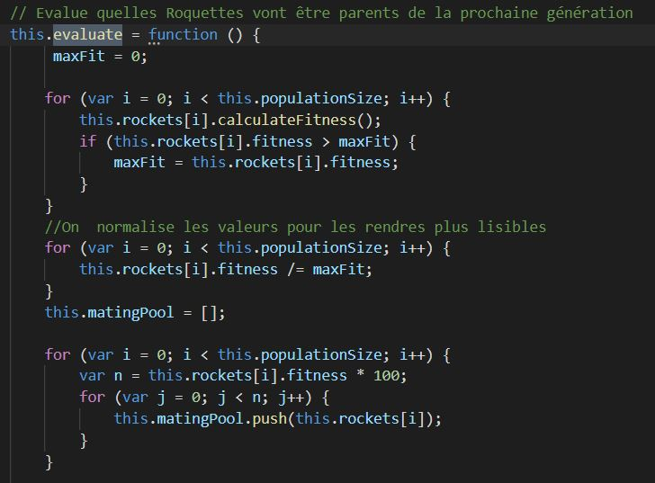
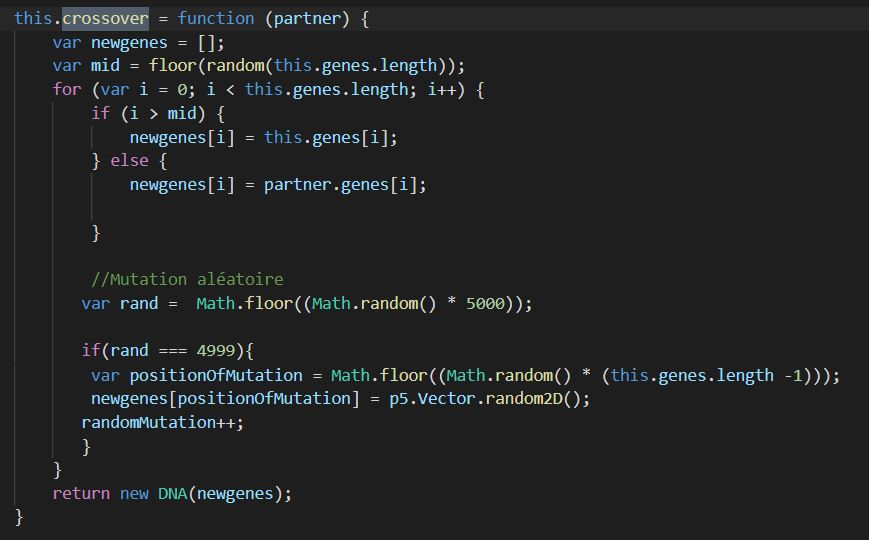

Initialisation: On génère une population aléatoire d'individus.

ADN: L'ADN des batônnets est un tableau de vecteurs.

Fitness: Chaque individu a un score (la fitness) qui est proportionnel à sa réussite à l'exercice.

Sélection (Roulette Wheel): Plus un individu a une fitness élevée, plus il aura de probabilité d'être sélectionné pour se reproduire.

Croisement (Crossover): Le croisement se fait entre deux individus. Une partie de l'ADN de l'enfant vient du parent A et l'autre du parent B. On induit également des mutations aléatoires afin que la population continue d'évoluer au fil du temps.
